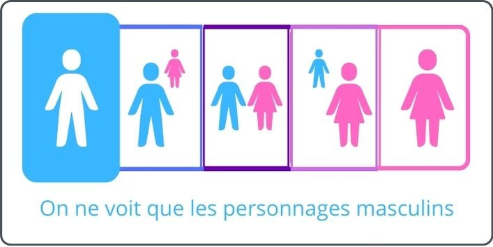
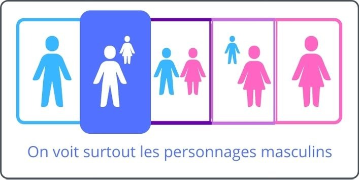
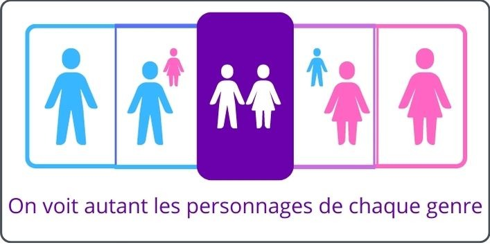
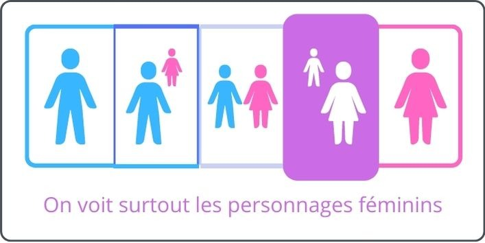
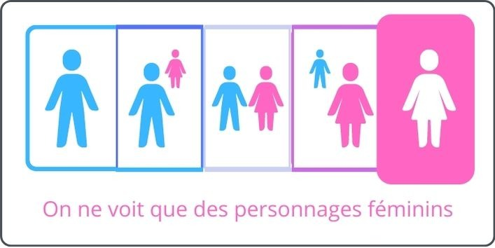

MyFairStory
A system invented to see at a glance how equally women and men are represented in a story — book, film, series…
The score builds on a symmetrical reading of the Bechdel test, applied to both genders.
❌ Before
- Gender bias in stories stays invisible or anecdotal
- The Bechdel test is binary (pass / fail)
- Hard to compare books, films and series with one shared lens
✅ After
- A color score readable instantly
- Violet = equivalent representation
- Blue / pink = imbalance toward male or female
- Works across story formats
How the score works
1. The test, for each gender:
At least 2 characters of that gender have a first name; those two characters talk to each other; and the conversation is about something other than the other gender.
2. Compare both results:
If both genders pass (or fail) equivalently — none, partial, or full — the score is violet. Otherwise it leans toward blue (male more represented) or pink (female more represented).
3. What it reveals:
Applied to contemporary stories, the score very often leans blue: today’s narratives still center male characters.
Original concept — visualizing a narrative equity indicator
Concept